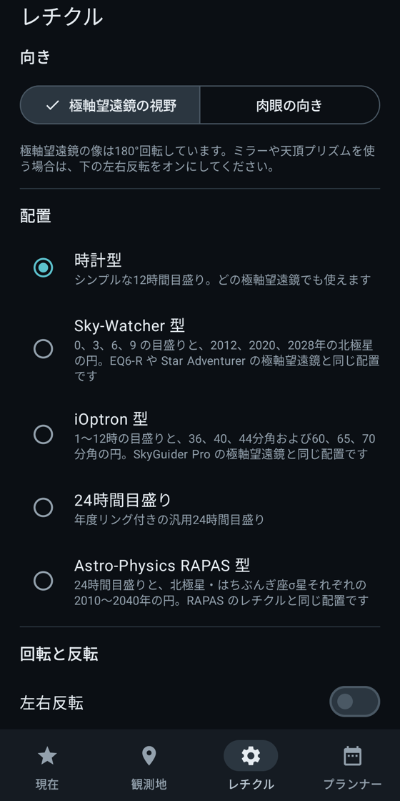
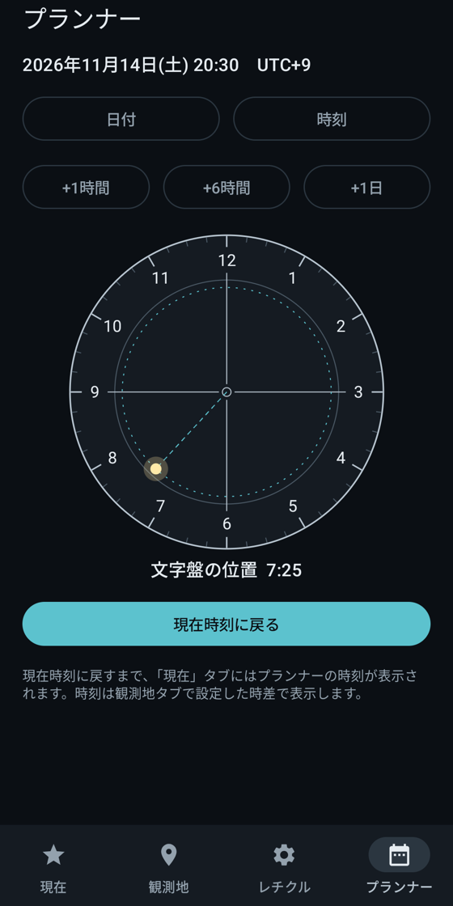
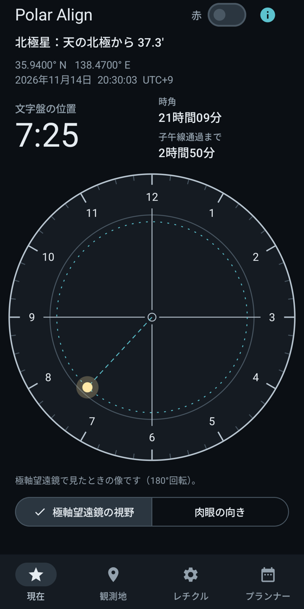
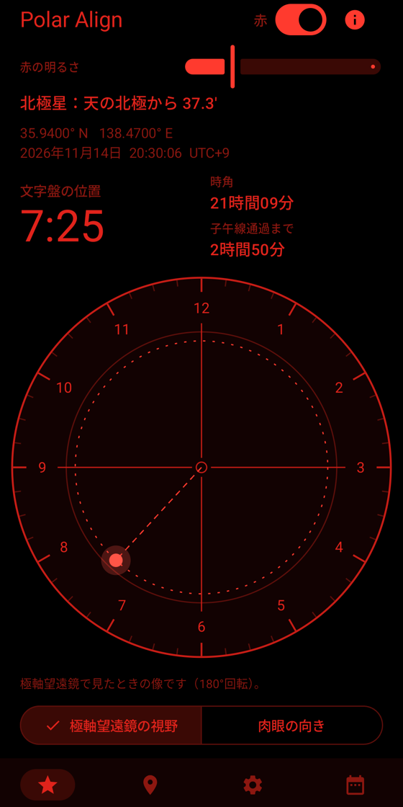

のぞいたときの見え方で、レチクルを描きます。
極軸望遠鏡で見た向き（180°回転）と肉眼の向きを切り替えられます。見たままの絵に合わせるだけなので、頭の中で反転させる必要はありません。




Pro では、各社の取扱説明書の図をもとにした Sky-Watcher、iOptron、Orion、Celestron、Explore Scientific EXOS-2、Vixen PF-L のレチクルが使えます。
観測地と現在時刻から、北極星を入れる位置を時計の読みで表示します。表示された位置に北極星を入れて赤道儀を固定すれば、極軸合わせは終わりです。
Google Play で近日公開Android。オフラインで動作、広告もアカウント登録もありません。


赤色モードではシステムバーも消えるので、画面に白い表示が残りません。赤道儀のそばでも目が暗さに慣れたままです。
緯度経度を入力するか、「現在地を使う」を一度タップするだけ。位置情報はタップしたときだけ読み取り、端末の外には送りません。
極軸望遠鏡で見た向き（180°回転）と肉眼の向きを切り替えられます。見たままの絵に合わせるだけなので、頭の中で反転させる必要はありません。


Pro では、各社の取扱説明書の図をもとにした Sky-Watcher、iOptron、Orion、Celestron、Explore Scientific EXOS-2、Vixen PF-L のレチクルが使えます。
歳差、章動、光行差を含めて計算しています。天文計算ライブラリ astropy と時角を比べました。大気差は考慮していません。
時計型レチクルで、北極星の位置をリアルタイムに確認できます。
買い切りです。
レチクルのしくみと、時計の読み方を出典つきで説明しています。